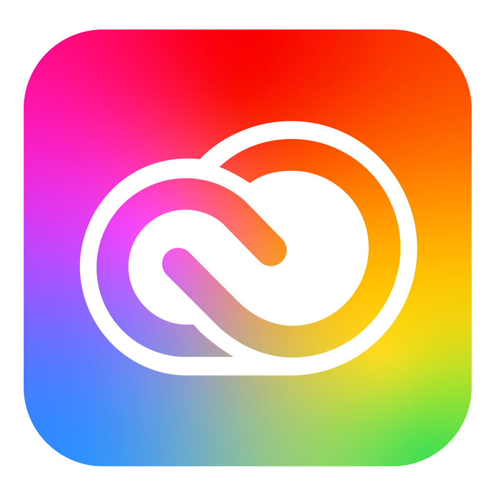
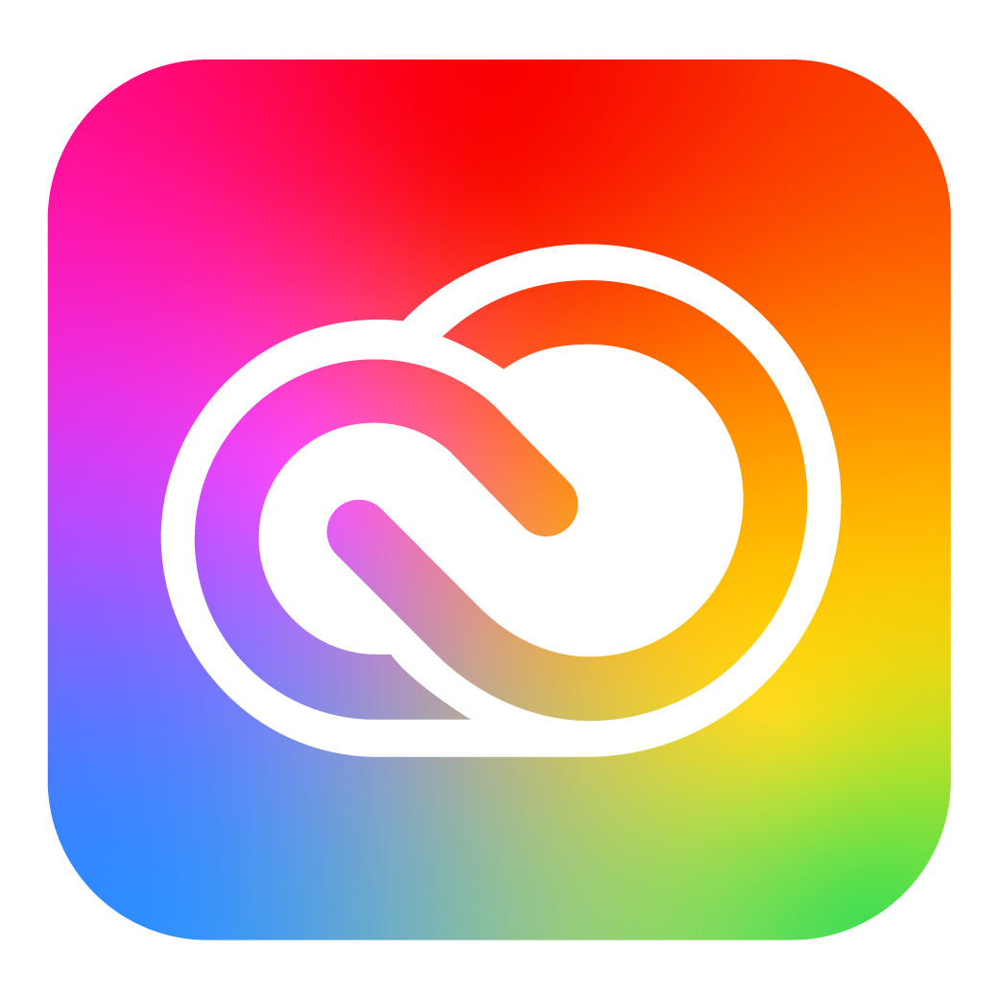

Lauriane Boscher
 



Dynamique, dévouée, à l'écoute, je suis passionnée par la communication et le marketing. Durant ma licence à l'Université de Rennes 2, j'ai acquis beaucoup de connaissances théoriques. Actuellement en 5ème année Manager de la marque à l'ISCOM Rouen et en alternance au sein de Logeo Seine, cette expérience me permet de continuer ma professionnalisation, commencée lors de mes différents stages.
Rejoignez ma communauté